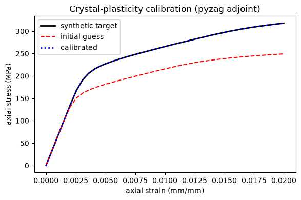

Calibrating a crystal-plasticity model with pyzag#
The pyzag tutorial and the deterministic / statistical notebooks calibrate a scalar viscoplastic model. Here we take the same chunked-adjoint machinery to a much stiffer problem: a Taylor polycrystal, where every grain integrates its own elastic strain, orientation, and slip hardening, and all grains share one global deformation-rate / stress state.
That per-grain-plus-global structure is a BLOCK + DENSE system: the pyzag backend keeps each grain’s state in a per-site (BLOCK) group and the global mixed-control unknowns in a DENSE group, solving the coupled step with a Schur complement. We calibrate two slip/Voce hardening parameters from a synthetic macroscopic stress–strain curve.
The roadmap:
Write the mixed-control crystal-plasticity model and wrap it for pyzag.
Build a synthetic experiment (random grain orientations + a strain ramp).
Generate a ground-truth curve, then perturb the hardening parameters.
Recover them with LBFGS through the chunked adjoint.
The material model#
We write the model to an input file. It is a mixed-control Taylor crystal
plasticity model (FCC, {111}<110> slip): elasticity from named cubic constants,
a power-law slip rule with Voce single-slip hardening, and backward-Euler
integration of each grain’s elastic strain, orientation, and slip hardening. The
[EquationSystems] block declares the two-group structure = 'block dense' split
(per-grain unknowns; global mixed-control unknowns) solved by a SchurComplement.
%%writefile model.i
# Mixed-control Taylor crystal-plasticity model. The elastic stiffness is built
# from named (E, nu, G) coefficients via CubicElasticityTensor so each is a
# tunable NEML2 parameter mirrored as a torch.nn.Parameter by NEML2PyzagModel.
# Two Voce/slip hardening parameters are calibrated in this tutorial:
# slip_strength_constant_strength (initial slip resistance, MPa)
# voce_hardening_initial_slope (initial hardening slope, MPa)
[Tensors]
[sdirs]
type = Python
expr = 'MillerIndex(torch.tensor([1, 1, 0], dtype=torch.int64))'
[]
[splanes]
type = Python
expr = 'MillerIndex(torch.tensor([1, 1, 1], dtype=torch.int64))'
[]
[]
[Data]
[crystal_geometry]
type = CubicCrystal
lattice_parameter = 1
slip_directions = 'sdirs'
slip_planes = 'splanes'
[]
[]
[Models]
# Mixed control (global)
[mixed_control]
type = MixedControlSetup
x_above = 'deformation_rate'
x_below = 'target_cauchy_stress'
y = 'mixed_state'
[]
[y_constraint]
type = SR2LinearCombination
from = 'mixed_state prescribed'
to = 'y_residual'
weights = '1 -1'
[]
# Per-crystal update
[euler_rodrigues]
type = RotationMatrix
from = 'orientation'
to = 'orientation_matrix'
[]
[elastic_tensor]
type = CubicElasticityTensor
coefficient_types = 'YOUNGS_MODULUS POISSONS_RATIO SHEAR_MODULUS'
coefficients = '100000 0.307 11046.58'
[]
[elasticity]
type = GeneralElasticity
elastic_stiffness_tensor = 'elastic_tensor'
strain = 'elastic_strain'
stress = 'cauchy_stress'
[]
[resolved_shear]
type = ResolvedShear
stress = 'cauchy_stress'
[]
[elastic_stretch]
type = ElasticStrainRate
deformation_rate = 'deformation_rate'
[]
[plastic_spin]
type = PlasticVorticity
[]
[plastic_deformation_rate]
type = PlasticDeformationRate
[]
[orientation_rate]
type = OrientationRate
[]
[sum_slip_rates]
type = SumSlipRates
[]
[slip_rule]
type = PowerLawSlipRule
n = 20
gamma0 = 0.0001
[]
[slip_strength]
type = SingleSlipStrengthMap
constant_strength = 120.0
[]
[voce_hardening]
type = VoceSingleSlipHardeningRule
initial_slope = 10.0
saturated_hardening = 155.0
[]
[integrate_slip_hardening]
type = ScalarBackwardEulerTimeIntegration
variable = 'slip_hardening'
[]
[integrate_elastic_strain]
type = SR2BackwardEulerTimeIntegration
variable = 'elastic_strain'
[]
[integrate_orientation]
type = WR2ImplicitExponentialTimeIntegration
variable = 'orientation'
[]
[per_crystal_update]
type = ComposedModel
models = 'elasticity euler_rodrigues
orientation_rate resolved_shear
elastic_stretch
plastic_deformation_rate plastic_spin
sum_slip_rates slip_rule slip_strength voce_hardening
integrate_slip_hardening
integrate_elastic_strain
integrate_orientation'
additional_outputs = 'cauchy_stress'
[]
# Global constraint
[mean_stress]
type = SR2IntermediateMean
from = 'cauchy_stress'
to = 'mean_cauchy_stress'
reduces = 'grain'
[]
[match_mean_cauchy_stress]
type = SR2LinearCombination
from = 'target_cauchy_stress mean_cauchy_stress'
to = 'target_cauchy_stress_residual'
weights = '1 -1'
[]
[global_constraint]
type = ComposedModel
models = 'mean_stress match_mean_cauchy_stress'
[]
# Full implicit model
[implicit_model]
type = ComposedModel
models = 'mixed_control y_constraint per_crystal_update global_constraint'
[]
[]
[EquationSystems]
[eq_sys]
type = NonlinearSystem
model = 'implicit_model'
unknowns = 'elastic_strain orientation slip_hardening; deformation_rate target_cauchy_stress'
residuals = 'elastic_strain_residual orientation_residual slip_hardening_residual; y_residual target_cauchy_stress_residual'
structure = 'block dense'
[]
[]
[Solvers]
[newton]
type = NewtonWithLineSearch
max_linesearch_iterations = 5
linear_solver = 'schur'
[]
[lu]
type = DenseLU
[]
[schur]
type = SchurComplement
residual_primary_group = '0'
unknown_primary_group = '0'
primary_solver = 'lu'
schur_solver = 'lu'
[]
[]
[Models]
[predictor]
type = ConstantExtrapolationPredictor
unknowns_SR2 = 'elastic_strain deformation_rate target_cauchy_stress'
unknowns_MRP = 'orientation'
unknowns_Scalar = 'slip_hardening'
[]
[model_bare]
type = ImplicitUpdate
equation_system = 'eq_sys'
solver = 'newton'
predictor = 'predictor'
[]
[compute_mixed_state]
type = MixedControlSetup
x_above = 'deformation_rate'
x_below = 'target_cauchy_stress'
y = 'mixed_state'
[]
[model]
type = ComposedModel
models = 'model_bare compute_mixed_state'
additional_outputs = 'mixed_state'
[]
[]
Writing model.i
Setup#
Imports, the calibration configuration, and the reproducibility knobs.
import sys
import matplotlib.pyplot as plt
import torch
from pyzag import chunktime, nonlinear, reparametrization
import neml2
import neml2.types
from neml2.pyzag import NEML2PyzagModel
torch.manual_seed(42)
torch.set_default_dtype(torch.float64)
device = torch.device("cuda" if torch.cuda.is_available() else "cpu")
torch.set_default_device(device)
# Kept small so the tutorial runs quickly; scale these up for real work.
NGRAINS = 25
NTIME = 40
NCHUNK = 5
N_ITER = 5
MAX_STRAIN = 0.02
RATE = 1.0e-4
AXIAL = 2 # index of the axial component in the 6-vector Mandel state
# Calibrate the two hardening parameters the 2%-strain curve is sensitive to.
# (Voce saturated hardening only bites near saturation -- slip ~ tau_sat/theta0,
# far beyond this strain -- so it is left fixed rather than fit unidentifiably.)
CALIBRATION_PARAMS = [
"slip_strength_constant_strength",
"voce_hardening_initial_slope",
]
# Physically sensible ranges used to rescale the optimizer's search space.
PARAM_RANGES = {
"slip_strength_constant_strength": (1.0, 2_000.0),
"voce_hardening_initial_slope": (1e-3, 50_000.0),
}
# Multiplicative offsets applied to the truth to make the (wrong) starting guess.
PERTURB = {
"slip_strength_constant_strength": 0.75,
"voce_hardening_initial_slope": 2.0,
}
/home/tranh/miniconda3/envs/neml2_pyzag_ci/lib/python3.12/site-packages/torch/cuda/__init__.py:187: UserWarning: CUDA initialization: The NVIDIA driver on your system is too old (found version 12040). Please update your GPU driver by downloading and installing a new version from the URL: http://www.nvidia.com/Download/index.aspx Alternatively, go to: https://pytorch.org to install a PyTorch version that has been compiled with your version of the CUDA driver. (Triggered internally at /pytorch/c10/cuda/CUDAFunctions.cpp:119.)
return torch._C._cuda_getDeviceCount() > 0
A synthetic experiment#
No external dataset is needed: we draw random uniform-on-SO(3) grain orientations
(as MRPs, the model’s orientation parametrization) and a constant-rate axial strain
ramp. random_orientations returns a typed neml2.types.MRP that feeds straight
into the state – no raw-tensor unwrapping.
def random_orientations(ngrains):
g = torch.randn(ngrains, 3, 3)
q, r = torch.linalg.qr(g)
q = q * torch.sign(torch.diagonal(r, dim1=-2, dim2=-1)).unsqueeze(-2)
q[:, :, 0] = q[:, :, 0] * torch.linalg.det(q).unsqueeze(-1)
return neml2.types.MRP.from_matrix(neml2.types.R2(q, 1))
def strain_time_grid(max_strain, ntime, rate):
strain = torch.linspace(0.0, max_strain, ntime)
return strain, strain / rate
orientations = random_orientations(NGRAINS)
strain, times = strain_time_grid(MAX_STRAIN, NTIME, RATE)
Wrap the model for pyzag#
NEML2PyzagModel adapts the NEML2 nonlinear system to pyzag’s
NonlinearFunctionOperatorFactory, mirroring the include_parameters as
torch.nn.Parameters. neml2.compile then JIT-compiles the residual/Jacobian
evaluation in place (a transparent, in-place acceleration; the first call pays a
one-time compile cost), so each Newton and adjoint step runs a fused graph.
nsys = neml2.load_nonlinear_system("model.i", "eq_sys")
model = NEML2PyzagModel(nsys, include_parameters=CALIBRATION_PARAMS)
neml2.compile(model)
NEML2PyzagModel()
The differentiable module#
A thin torch.nn.Module that assembles the initial state and the per-step driving
forces once, then returns the predicted macroscopic axial stress trajectory.
forward differentiates through the chunked solve with nonlinear.solve_adjoint
(the memory-efficient adjoint).
class CrystalCalibration(torch.nn.Module):
def __init__(self, model, orientations, strain, times, nchunk):
super().__init__()
self.model = model
self.nchunk = nchunk
self.orientations = orientations # typed MRP, on-device already
self.register_buffer("strain", strain)
ngrains = orientations.shape[0]
ntime = strain.shape[0]
dtype = orientations.dtype
nbatch = 1
ic = {
"elastic_strain": torch.zeros(nbatch, ngrains, 6, dtype=dtype),
"orientation": orientations.dynamic_batch.unsqueeze(0),
"slip_hardening": torch.zeros(nbatch, ngrains, dtype=dtype),
"deformation_rate": torch.zeros(nbatch, 6, dtype=dtype),
"target_cauchy_stress": torch.zeros(nbatch, 6, dtype=dtype),
}
self._y0 = model.assemble_state(ic, dynamic_dim=1)
control = torch.zeros(ntime, nbatch, 6, dtype=dtype)
control[..., AXIAL] = 1.0 # prescribe the axial deformation rate
prescribed = torch.zeros(ntime, nbatch, 6, dtype=dtype)
prescribed[..., AXIAL] = RATE
forces = {
"control": control,
"prescribed": prescribed,
"t": times.reshape(ntime, 1).expand(ntime, nbatch).contiguous(),
"vorticity": torch.zeros(ntime, nbatch, 3, dtype=dtype),
}
self._forces = model.assemble_forces(forces, dynamic_dim=2)
self._ntime = ntime
@property
def calibration_parameters(self):
params = getattr(self.model, "parametrizations", None)
out = []
for name in CALIBRATION_PARAMS:
if params is not None and name in params:
out.append(params[name].original)
else:
out.append(getattr(self.model, name))
return out
def _solver(self, direct_solve_operator):
return nonlinear.RecursiveNonlinearEquationSolver(
self.model,
step_generator=nonlinear.StepGenerator(self.nchunk),
predictor=nonlinear.PreviousStepsPredictor(),
direct_solve_operator=direct_solve_operator,
nonlinear_solver=chunktime.ChunkNewtonRaphsonLineSearch(
rtol=1e-6, atol=1e-8, linesearch_iter=5
),
)
def forward(self, direct_solve_operator=chunktime.BidiagonalThomasFactorization):
solver = self._solver(direct_solve_operator)
traj = nonlinear.solve_adjoint(solver, self._y0, self._ntime, self._forces)
return traj[..., -6 + AXIAL].squeeze(-1)
def rescale_parameters(module):
"""Wrap each calibration parameter in RangeRescale for scaled-space LBFGS."""
dtype = module.orientations.dtype
mapping = {
f"model.{name}": reparametrization.RangeRescale(
torch.tensor(lo, dtype=dtype), torch.tensor(hi, dtype=dtype), clamp=True
)
for name, (lo, hi) in PARAM_RANGES.items()
}
reparametrization.Reparameterizer(mapping, error_not_provided=False)(module)
module = CrystalCalibration(model, orientations, strain, times, NCHUNK).to(device)
Ground truth and a perturbed start#
We evaluate the model at its default hardening parameters to make a synthetic
target, then multiply those parameters by PERTURB to get a deliberately-wrong
starting guess.
truth = {n: float(getattr(model, n).detach()) for n in CALIBRATION_PARAMS}
with torch.no_grad():
target = module()
with torch.no_grad():
for name, factor in PERTURB.items():
getattr(model, name).mul_(factor)
model._update_parameter_values()
pred_init = module()
started = {n: float(getattr(model, n).detach()) for n in CALIBRATION_PARAMS}
print("truth: ", {k: round(v, 3) for k, v in truth.items()})
print("started:", {k: round(v, 3) for k, v in started.items()})
/home/tranh/.claude_tmp/ipykernel_2352609/3253022097.py:47: UserWarning: pyzag lowered torch._functorch.config.donated_buffer's default to False process-wide. AOTAutograd 'donated buffers' (torch>=2.12) are incompatible with pyzag's retain_graph=True adjoint over torch.compile'd models, which otherwise raises 'compiled with non-empty donated buffers'. To keep donated buffers enabled, restore torch._functorch.config._config['donated_buffer'].default = True -- compiled models differentiated through the adjoint will then error.
return nonlinear.RecursiveNonlinearEquationSolver(
W0804 13:03:30.053000 2352609 site-packages/torch/utils/cpp_extension.py:140] [1/0] No CUDA runtime is found, using CUDA_HOME='/usr/local/cuda'
truth: {'slip_strength_constant_strength': 120.0, 'voce_hardening_initial_slope': 10.0}
started: {'slip_strength_constant_strength': 90.0, 'voce_hardening_initial_slope': 20.0}
Calibrate through the chunked adjoint#
We rescale the parameters into [0, 1] space (LBFGS is sensitive to conditioning),
then run LBFGS with a strong-Wolfe line search. Each closure call runs the full
chunked solve and backpropagates through it via the adjoint – so the peak memory
scales with the chunk size, not the full time history.
rescale_parameters(module)
optimizer = torch.optim.LBFGS(
module.calibration_parameters, lr=1.0, max_iter=20, line_search_fn="strong_wolfe"
)
history = []
def closure():
optimizer.zero_grad()
loss = ((module() - target) ** 2).mean()
loss.backward()
return loss
for it in range(N_ITER):
loss = float(optimizer.step(closure).detach())
history.append(loss)
print(f"iter {it + 1:2d} loss = {loss:.6e}")
with torch.no_grad():
pred_final = module()
recovered = {n: float(getattr(model, n).detach()) for n in CALIBRATION_PARAMS}
assert history[-1] < history[0]
iter 1 loss = 2.499914e+03
iter 2 loss = 1.781305e-10
iter 3 loss = 1.781305e-10
iter 4 loss = 1.781305e-10
iter 5 loss = 1.781305e-10
Results#
The loss drops by orders of magnitude and the recovered parameters return to the ground truth; the calibrated stress–strain curve lands back on the synthetic target.
print(f"loss {history[0]:.3e} -> {history[-1]:.3e}")
for n in CALIBRATION_PARAMS:
print(f"{n:38s} truth={truth[n]:10.3f} recovered={recovered[n]:10.3f}")
s = strain.detach().cpu().numpy()
fig, ax = plt.subplots(figsize=(6, 4))
ax.plot(s, target.detach().cpu().numpy(), "k-", lw=2, label="synthetic target")
ax.plot(s, pred_init.detach().cpu().numpy(), "r--", label="initial guess")
ax.plot(s, pred_final.detach().cpu().numpy(), "b:", lw=2, label="calibrated")
ax.set_xlabel("axial strain (mm/mm)")
ax.set_ylabel("axial stress (MPa)")
ax.set_title("Crystal-plasticity calibration (pyzag adjoint)")
ax.legend()
fig.tight_layout()
loss 2.500e+03 -> 1.781e-10
slip_strength_constant_strength truth= 120.000 recovered= 120.000
voce_hardening_initial_slope truth= 10.000 recovered= 9.999

Where to go next#
The scalar-viscoplastic versions of this workflow are the deterministic (point estimate) and statistical (Bayesian / SVI) notebooks.
The pyzag tutorial explains why the chunked adjoint is needed for time-history calibration.
For the underlying algorithms (chunk factorizations, predictors, block-size trade-offs), see the pyzag documentation.